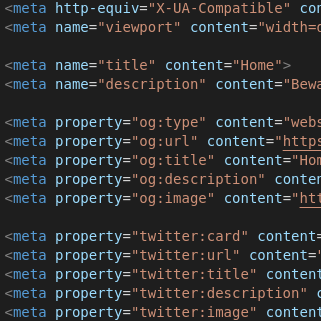
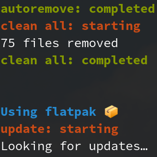

Biography
Based in Milan since 1997.
I attended a Scientific Lyceum displaying a thesis on malwares and art.
I'm graduating in Computer Science at Universita' degli Studi di Milano.
Moreover, I also work as a Systems Analyst since 2017.
My interests are Information Security and Scientific Visualization, while in the free time I study Computer Graphics and random hobbies.
Projects

> archetipico.github.io
That's the website you're using right now!

> eMerger
Useful toolkit for UNIX systems completely made in Bash. Once installed you only have to type `up` to update everything that can be updated.

> TelegramBot
My Telegram bot: it can tell you the weather, compile regexes, create a palette of colors from an image and more!

> WallpaperEnhancer
Windows 10 doesn't let you change your wallpaper based on the time of the day, but this little script will do the job.